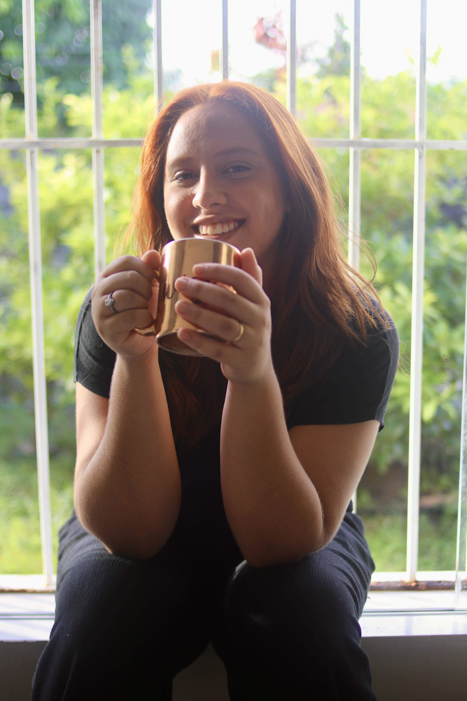
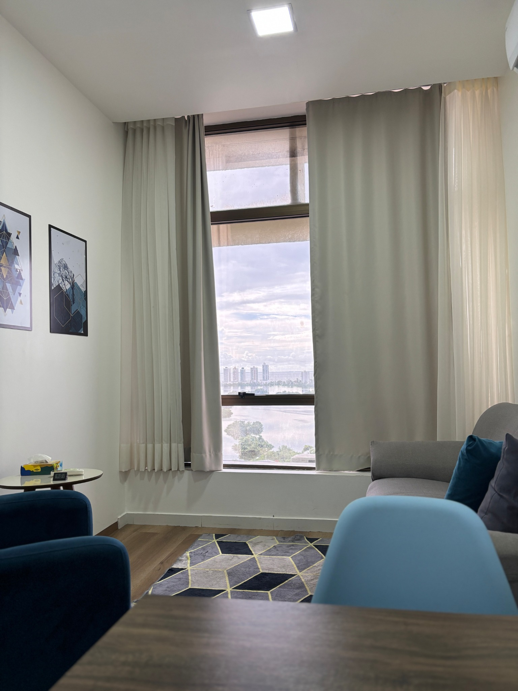
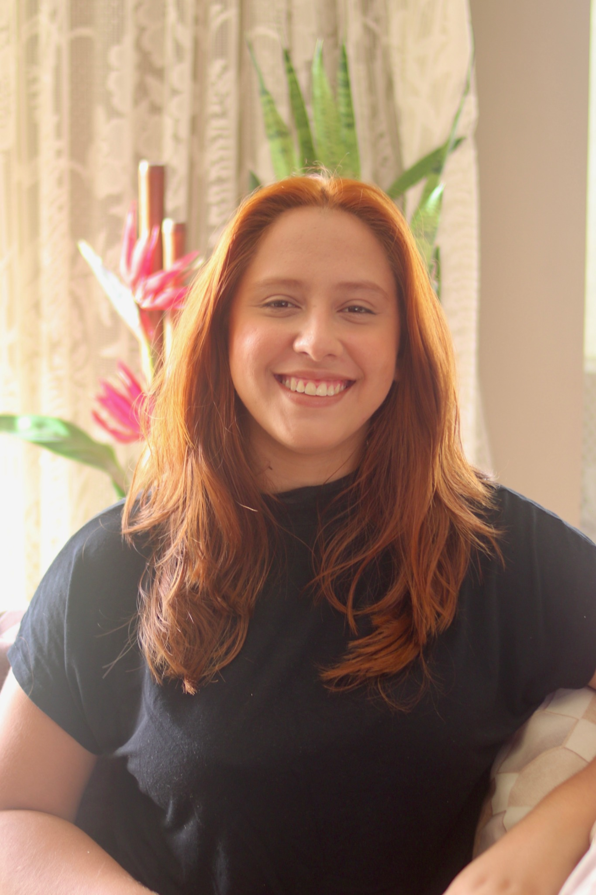

Ansiedade
Aprenda a lidar com os pensamentos e recupere a tranquilidade.
Saúde mental para uma vida mais leve
Um espaço seguro para você se escutar, se entender e construir uma vida com mais equilíbrio, bem-estar e sentido.
✆ Agende sua consulta
“Cuidar da sua mente é também cuidar do seu futuro.”Aqui é um
Acompanhamento psicológico para diferentes fases e desafios da vida.
Aprenda a lidar com os pensamentos e recupere a tranquilidade.
Conheça-se com profundidade e descubra novas possibilidades.
Um olhar acolhedor para enfrentar momentos difíceis.
Desenvolva relações mais saudáveis e satisfatórias.
Encontre equilíbrio entre objetivos, rotina e saúde mental.
Cada história é única. Vamos conversar sobre a sua?

Escuta • cuidado • presençaSobre mim
Sou Ana Freitas, psicóloga apaixonada por pessoas e pelo poder que a escuta tem de transformar vidas. Acredito em um processo terapêutico baseado no respeito, na ética e no acolhimento, sempre adaptado às suas necessidades e ao seu ritmo.
Conheça mais sobre meu trabalho →O que a terapia pode cultivar
Mais bem-estar
no dia a dia
Autoconfiança
para novas escolhas
Equilíbrio emocional
para lidar com desafios
Uma vida mais leve
e com mais sentido
Depoimentos
“A terapia me ajudou a me reconectar comigo mesma. Hoje me sinto mais leve e segura para enfrentar os desafios.”
“Profissional extremamente atenciosa, acolhedora e competente. Me sinto ouvida e respeitada em todas as sessões.”
“Foi um divisor de águas na minha vida. Consegui lidar melhor com minha ansiedade e hoje vivo com mais equilíbrio.”
Onde estou
Atendimento em um ambiente tranquilo, reservado e de fácil acesso em São Luís.
Rua Genésio Rego
Seu primeiro passo
Agende sua consulta e comece hoje a cuidar de você.
✆ Falar no WhatsAppCuidar de você
também é um ato
de coragem. ♡